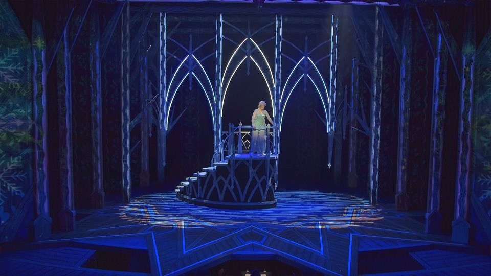

Start here
Catch every cue on camera
A log of every cue command and a picture of the stage around each one. Pick how far to take it.
Pick a route
Stills: Frozen stage camera, Nov 17
Where the signals go
- Cue data
- Picture
- Clock
- Review
- The show's own path
What each route costs you
| Cheap | Networked | AI-assisted | |
|---|---|---|---|
| Spend | LowestMIDI interface and thru box, on top of a phone and laptop. | HighestCamera, capture machine, switch ports. Often already in the rig. | MiddleYour capture route, plus model use per still. |
| Setup | QuickestClamp it, plug it in, film the clock. | LongestShow network up, one shared clock. | BetweenCapture setup, a test pass, a reference frame per scene. |
| Timing | LoosestAbout a frame at best, from a filmed clock. | TightestA shared clock, or recorded timecode. | InheritedWhatever its capture route measured. |
| Review work | MostEvery firing found and written up by hand. | LessStills arrive filed by cue. You observe. | LeastDrafted for you. You still confirm each one. |
| Evidence | Two sourcesCue log and one camera. | Four sourcesCue log, server log, program out, camera. | Capture'sPlus drafts, marked unconfirmed. |
Dots show how much of each row a route takes.
Step 1 of 5 · Cheap route
Gear up
What to bring for this route, and what bites.
Capture kit
- Cue log
- A laptop running a free MIDI monitor behind a USB MIDI interface: MIDI Monitor on a Mac, Protokol on Windows, or ReceiveMIDI from the command line. Feed it from a thru box or a spare output so the show line stays intact.
- Stage picture
- A phone on a clamp or tripod with the whole playing area in view. Power it, switch to airplane mode and record 1080p continuously.
- Cue log
- A listen-only tap on the show network: join the network MIDI session, or have playback send its OSC to Protokol. Pull the media server's own log too, so you have what it ran beside what it received.
- Stage picture
- A network camera on a locked preset, recorded with OBS Studio. Record the media server's program output as a second feed: one shows what was sent, the other what landed.
From the Frozen runStills fetched one at a time took about 120 ms each, so polling topped out near 8 a second. The live stream gave 30 fps at 640×360 for about 9 Mbit/s.
- Cue log
- The log from your capture route, with cue labels spelled exactly as they are on the cue sheet. Software can only match what's written the same way.
- Stage picture
- Stills at the same offsets for every firing, from a camera that never moves. A change in framing or exposure reads as a change on stage.
Clock and storage
- One clock
- The laptop's clock, filmed by the phone at the start and end of the run. Use a clock display that shows fractions of a second.
- Storage
- Room on the phone for the whole run (1080p takes a few gigabytes an hour) and somewhere to offload it afterward. A spreadsheet is enough for the notes, and LosslessCut is a free way to step through the clip and save stills.
- One clock
- One NTP source for every machine, or LTC timecode recorded on a camera audio channel. Log, recorder and media server then share one timeline.
- Storage
- A capture machine or NAS sized for every feed for the whole run, on a network segment that can carry the video.
- One clock
- Whatever your capture route uses. Software can't repair timestamps that were never lined up.
- Storage
- Space for stills, drafts, and the prompt or thresholds you used. Keep the cue sheet as text or CSV: cue number, label, intended look.
Watch out
- Phones overheat, take calls and stop at storage limits. Check at every break.
- Autofocus and auto-exposure hunt under stage light. Lock both.
- 4K and high frame rates fill storage without making a cue easier to judge.
- If cues travel over USB or the network, there's no cable to split. Run the monitor on the receiving computer.
- Listen, don't control. Some devices take one control connection at a time, so an extra client can knock the show's own session off.
- Full-bandwidth NDI runs around 100 to 150 Mbps per 1080p stream. Keep it off the show-control network, or use a lighter stream.
- Keep the capture machine out of the control path. If it dies, the show shouldn't notice.
- Software flags what looks different, and a scene look can look like a fault.
- Take timing from the logs, never from a model's description.
- Cloud models mean frames leave the building. Local analysis keeps them in-house.
From the Frozen runThe watcher's first threshold called the blue ice-palace look “off”. One reference frame fixed it.
Step 2 of 5 · Cheap route
Set up and test it
Tap the feed, frame the shot, sync the clocks, then prove it end to end.
Listen without touching
Set the logger to receive-only, and keep the raw messages beside any decoded labels.
Split the cue line with a MIDI thru box, or use a spare output, into the laptop's interface. Check which messages carry cue numbers: MIDI Show Control does. Notes and program changes need a mapping you write down.
Join the network MIDI session as a listener, or have playback send OSC to your logger on each cue. Open no extra control sessions to show devices.
Use the same tap as your capture route. Make the decoded labels match the cue sheet, so cue 42.1 in the log is cue 42.1 on the sheet.
F0 7F 01 02 01 01 34 32 2E 31 F7
MSCLightingGOCue 42.1
Frame it, lock it, check the recording
Get the surfaces the team cares about in frame. Judge focus, exposure and motion from the recording, not the viewfinder.
Lock the phone's focus and exposure so lighting changes stay visible. Clamp it where nobody will bump it, and mark the spot.
Recall one camera preset and lock control for the whole show. Turn off continuous autofocus and set focus by hand.
Frame for the software: the same shot every run, with the areas it measures clear of heads and masking.
From the Frozen runThe camera lock was set for two hours and ran out 39 minutes before the end. Lock until released.
Sync the clocks
Keep original timestamps. Fire a test cue with an obvious visible change to line up log and picture. The gap includes cue response, camera delay and recording delay.
Film the laptop's clock for a few seconds at the start and again at the end. The two readings give you the offset and any drift.
Point every machine at one NTP source and confirm they agree before the run, or record LTC on the camera's audio.
Do this on the capture route, then hand the software the measured offset as a number. Don't let it estimate one.
From the Frozen runThe camera's own timestamps had the wrong date. Frames were stamped by the capture machine as it fetched them.
Example offset note
Camera −0.42 s vs logger
Measured 18:55 · ±0.05 s
Camera −0.42 s vs logger
Measured 18:55 · ±0.05 s
Run a full test
Fire a known test cue. Find it in the saved log with the right source and label, then open the actual clip or stills.
Scrub the clip to the logged time plus your clock offset. If the change isn't there, fix the offset before the run.
Let the capture script grab its stills unprompted: a trigger frame plus +1, +2 and +3 s suits short transitions. A rolling buffer shows what happened before the GO.
Push the test firing through the whole pipeline and check the draft against the frame yourself. Give the software a reference frame for each scene look.
Rolling buffer
GO
+1 s
+2 s
+3 s
From the Frozen runAn install at 7:17 PM took the camera console offline for a minute, close to curtain. Nothing new within 30 minutes of the start.
Step 3 of 5 · Cheap route
During the run
Two feeds, watched separately.
Watch the log and the picture as two feeds
Cue log
A quiet stretch with no cues is normal. Check the logger's connection or heartbeat if it has one.
Picture
Make sure the camera still shows live motion and hasn't frozen.
At every break, look at the phone: still recording, not hot, storage left.
Watch the recorder's inputs and the clock status. When program out and the camera disagree, that's a finding to log, not a fault to chase.
A live watcher will flag frames mid-show. Note the time and keep going. Judging them is for review.
Timestamp every interruption
Note every hold, restart, skipped cue and capture gap. The Sessions tab stamps each one with a tap.
Read times off the laptop clock you filmed, so the notes and the log agree.
Stamp from a machine that's on the show's NTP source.
Restarts repeat cue numbers. Log them, or the software will merge two firings into one.
| 19:31:07 | Hold | Stage management hold |
| 19:35:22 | Restart | From cue 38 |
| 19:44:10 | Gap | Camera dropped, back at 19:44:52 |
If capture drops
- Note the last good event or frame, and when capture came back.
- Leave the existing files alone.
- Start a new segment and log the break.
- Save restarts and routing changes on show machines for a break.
Phone stopped? Start a new clip and film the clock again before carrying on.
If the recorder drops, the media server's own log still shows what ran.
Mark the gap, so nothing gets judged from frames that don't exist.
From the Frozen runTwo watcher restarts left gaps of a few seconds, and a 10-second dip had no frame kept to explain it.
Flagged, then cleared
The Frozen floor watch raised this alert in Act 2. The show report judged it a scene look, not a fault.

Step 4 of 5 · Cheap route
Review
Turn the log and footage into notes the team can trust.
What each source proves
Each source answers a different question, so don't let one stand in for another.
| Evidence | What it tells you |
|---|---|
| Incoming MIDI | A command reached the tap at the logged time. It doesn't show the cue ran. |
| Playback or console log | What the receiving app reports it ran, when you can get it. |
| Program out | What the media server sent, frame by frame. |
| Camera frame or clip | What the stage looked like at that media time. |
| Cue sheet | What the cue was supposed to do. |
| AI draft | A pointer to what to check. Not evidence until a person confirms it. |
One entry per firing
Every firing gets its own entry, notes and pickups included, as Run review shows. Scrub to each logged time plus the clock offset, and write what you see. Stills arrive filed by cue and firing. Your job is the observation. The software drafts each one. Confirm, correct or reject every draft.
Cue 42.119:42:18 localsecond firingGO receivedpicture at +2.1 scenter image still visiblecheck intended fade against cue sheet
- Late stillRecord its real timing.
- Frozen pictureMark it stale.
- Missing frameLeave it blank and give the reason.
- Can't tellLeave the question open.
- AI draftUnconfirmed until a person checks the frame.
File the picture with the firing
One still like this per offset is enough to see the portal, the floor and who is lit. Name it by cue and firing time.
A machine flags. A person decides.
The Nov 17 Frozen floor watch read one camera still every 10 seconds. It raised four alerts in Act 2, all judged scene looks, not faults.
Floor strips · 20:44 to 21:59 · 450 stills
- Alert raised
- Watcher reads “off”
- Off threshold
Step 5 of 5 · Cheap route
Wrap and hand off
Check it, bundle it, send it.
Stop and spot-check
Stop capture and let the files finish writing. Then check:
- The first, middle and last recordings or stills
- The expected cues are covered
- No missing intervals
- The timing reference still lines up
Cheap routeOffload the phone before it leaves the building.
Networked routeExport playback logs before anyone power-cycles the show machines.
AI routeRun the analysis on finished files only, never on ones still being written.
Keep the originals together
Edit and annotate copies, never the originals. Link media with relative paths so the archive still works after it moves.
From the Frozen runThere was no earlier run to compare against. Keep every one: the next run's first question is “was it like this last time?”
RUN-03/ ├─ cue-log/ original export ├─ media/ clips and stills ├─ program/ media server output ├─ server-log/ what playback ran ├─ ai/ drafts, prompt, thresholds ├─ notes/ timing and run notes ├─ reference/ cue-sheet version └─ copies/ edits and exports
Check the archive, then hand off
Open the archive copy and check that every file and link works. Then send:
- The cue
- Firing time
- What you saw
- Clip or still
Close the session in Sessions so it shows when capture stopped, then add the run to Run review.
Say which observations started as AI drafts and who confirmed them.
Records
Sessions
Runs opened here appear in Records. Share a run link to let another crew member open and edit it.
Slate a session
Route: Cheap route
Session records
Loading records…
No session selected
Pick a record, or start a session, to stamp holds, restarts, skips and gaps as they happen.